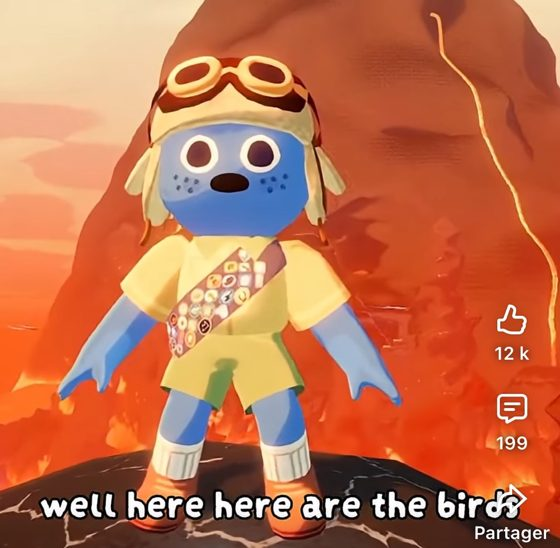

Le vocal : qui parle (tour 2)
Déjà choisi au tour 1 : un petit clic quand ton micro s'ouvre (B3), la ligne « Micro » qui défile (C1), le
curseur « Voix » (D1). Le vocal est dans Dev. Reste à savoir qui parle : au tour 1 tu n'avais choisi aucune
lueur, et Wouh a proposé depuis la bouche de Peak (fil T22).
Référence. Dans Peak, quelle que soit la
bouche du personnage, une bouche toute noire la remplace quand il parle et grossit, rétrécit sans arrêt au
rythme de sa voix (la capture de Wouh : la bouche noire sous le museau du scout bleu). Même idée dans
Content Warning (même studio) et
Lethal Company, où l'on repère la voix
sur le personnage et non sur l'interface.

Aujourd'hui. On entend la voix (Steam Voice, routée jour et nuit), rien ne montre de qui elle vient. Les
chats n'ont pas de bouche par défaut ; certains joueurs en mettent une (Bouche de mage, Sourire galactique…).
La scène. Le jour, tu regardes la table (vraie capture de la vue relevée, T23). Le chat noir en face
dit qu'il a vu quelqu'un se lever cette nuit, marque une pause, insiste ; le chat roux à droite lui répond et
ils parlent un instant en même temps. Le bouton « Son » fait un babil qui suit les mêmes voix, pour juger le
rythme.
Sans question : ton propre chat ouvre la bouche aussi, pour les autres (tu ne le vois pas, le clic du
tour 1 te suffit) ; la bouche est un petit disque posé sur le museau, grossi par le volume reçu, invisible au
repos, et elle marche avec le micro toujours ouvert comme avec V.
La bouche
Quelle bouche s'ouvre quand il parle. Même voix sur les trois cadres.
W1Un ovale noir, comme Peak (par défaut)
Ce que Wouh décrit : un trou noir sous le museau, rien d'autre. Se lit de loin, même sur un chat
noir grâce au museau clair.
W2Une gueule de chat
Même mouvement, mais une bouche ouverte rouge sombre avec deux crocs, dans le goût de la Bouche de
mage : plus « chat en peluche », moins nette de loin.
W3L'ovale noir, et la tête qui bouge
W1, plus un petit balancement de la tête quand il parle fort : on le repère même du coin de
l'œil, sans rien ajouter à l'écran.
Quand on ne voit pas son chat
Au vote, la vue baisse sur les cartes et coupe les têtes ; la nuit, vue de dessus, les chats ne se voient pas.
Ici c'est Autoplayclient1, en face, qui parle pendant le vote.
X1Rien, la bouche suffit (par défaut)
Wouh : « je pense que ça suffit ». On relève la tête pour voir qui parle ; la nuit, on reconnaît
ses complices à la voix.
X2Sa carte s'éclaire aussi
La lueur du tour 1 (A1) en plus de la bouche, seulement là où les chats ne se voient pas : au vote
et la nuit.